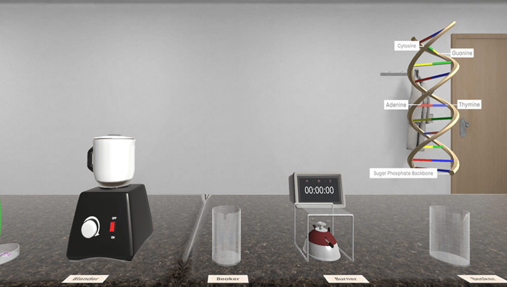

In today’s fast-changing educational environment, the challenge of getting students to think about, and engage with complex scientific concepts is greater than ever. You, as educators, know that while learning should be informative, it should also be captivating.
I had thought of using virtual reality (VR) as one of the innovative solutions in the teaching process for very intricate subjects like DNA extraction.
In this blog, we are going to talk about how DNA extraction with Virtual Reality can change the way you teach and make science more accessible and engaging for your students.
Challenges With Traditional DNA Extraction

In the field of biomolecular engineering, educators face the rewarding yet challenging task of guiding students through complex laboratory techniques like DNA extraction.
Let us understand the challenges associated with DNA extraction in labs-
Contamination Risks: Infected with other bacteria students may cause contamination during the extraction process when maintaining a sterile working condition can be difficult, such contamination of DNA samples can ruin the quality of a DNA sample.
This means you have to pay attention to detail and follow protocols.
Technical Skills and Protocol Familiarity: Students, particularly those new to laboratory work, often find it difficult to learn all of the different techniques and protocols used for DNA extraction, including pipetting, centrifugation, and correctly using reagents.
Errors and inconsistent results usually occur due to inadequate training or practice.
Yield and Purity Variability: In general, the problem with the extraction of DNA from various samples is that it is difficult to achieve consistent yields and purity even with the best reagents and protocols, whenever there are sample quality issues, reagent effectiveness, or procedural variations.
Frequently, students tend to get frustrated when their results do not go where it is expected which affects their confidence and understanding of the process.
Immersive Learning for Engagement
VR in DNA extraction presents a special opportunity to bring students into a simulated laboratory environment where they can conduct experiments without a physical lab.
According to the revelations of empirical research, using VR-based methods can make acquiring knowledge 76% more effective.
This is because VR methods embody the principles of ‘active learning’, which is one of the key pillars of Education 4.0. It posits that students should actively take part in the learning process via interaction with the educational elements.
Benefits of VR-based DNA Extraction
Interactive Learning Environment: By using VR for higher education like science, students ave a safe space where they can experiment with a variety of techniques without having the risk of real lab work.
Visualising Complex Concepts: With interactive components, students can visualise the structure of DNA and understand the components made.
Immediate Feedback: VR platforms can offer instant feedback on student performance on student learning from mistakes in real time.
Increased Motivation: A gamified experience of VR also helps the students stay actively interested in science.
Institutes That Have Implemented VR In DNA-Extraction
Several institutions have successfully integrated VR Labs into their curricula:
Stanford University
Stanford University introduced VR modules into molecular biology courses, so that students could conduct virtual experiments, such as DNA extraction, using state-of-the-art simulations.
VR labs' integration at Stanford University has increased student engagement levels. Virtual lab equipment is manipulatable by students and they can perform experiments that would be logistically difficult or impossible in a real classroom setting.
University of Illinois
Teaching science with VR labs was introduced by the University of Illinois to help engineering students visualise DNA structures as they learn about genetic engineering applications.
This technology helped engineering students understand genetic modifications. Students learn practically by simulating real world applications of DNA extraction techniques.
London University
The London University College taught forensic science students using VR modules to demonstrate how DNA analysis is done in simulated crime scene situations.
Students in University College London’s forensic science courses practise DNA extraction from crime scene samples using VR simulations. By taking this hands-on approach, these essential skills will be built, and students will be prepared as to how they will be applied in the future.
Bridging Theory with Practice
The impact of Education 4.0 and the technological trends is mirrored in the need for innovative teaching methods. Educause Review research found that 96% of educators think technology can transform science education and increase student engagement.
Incorporating VR for learning helps you align your teaching methods with the current educational paradigms that champion experiential learning.
Summing up the key takeaways from the blog-
Virtual reality changes DNA extraction education by producing immersive environments that interest and engage students to participate more.
With VR students can practise DNA extraction techniques in a risk-free space for experimentation.
VR studies show that students using VR for DNA extraction can understand complex biological concepts much better than traditional methods.
When innovations in STEM Education are implemented in institutions' curricula, where implementation is successful, students can prepare for practical science and technology applications and build confidence and the skills necessary to pursue future careers.
Final Words
Virtual Reality plus DNA extraction integration into education provides a more enriching educational experience as well as prepares students to have skills that will be very important in their future careers in science and technology.
For educators dedicated to cultivating curiosity and comprehension among their students, this innovative approach will change the way you teach difficult subjects.
What if you could envision your learners engaged with the nuances of DNA while exploring it immersed in experiences within the confines of your classroom?